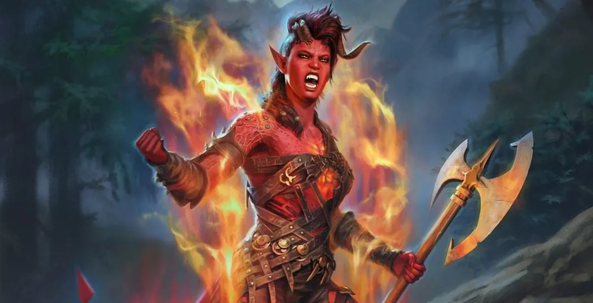

Characters
A worshiper of the Godess of night Shar. She was saved / groomed by her from a young age and is now her loyal servant.
She holds a mysterious prism object that she must bring to baldur's gate however has had her memory tempory erased due to the secrecy of the mission.
She is very sucpicious and guarded. Has probably done several questionable things for Shar.
Shar gave her a painful scar on her hand that flairs up from time to time for reasons Shadowheart does not know.

A slave forced to fight in the dameon wars in hell for her master. She has recently escaped.
Like the others she has a mindflayer parasite threatening to take over her mind.
An infernal engine burning away at her core. Makes it so she could burn people by touch. She needs to find an engineer to fix it up before a full meltdown occurs.
Despite all this she has a very positive, go getter attitude.
Shes a strong barbarian forged in war. Recently fought her way out of captivity but her master will find her again.
Lae'zel believes in strength and sees her race as superiour to others. Her personality is very harsh and transactional. She is forced to be very self reliant.
She is a Githraki, a race who serve the queen and follow strict hierachy. Previously enslaved for generations via the Gaith, they are on a holy war to destroy theml
Is well read on Githraki knowledge and believes getting to her Cresh is the key to getting rid of the tadpol in her brain.
A wizard fallen from grace. Now forced to consume magical objects at regular intervals to stay alive.
Very charming and ambitious personality.
Was taken on as an apprentice to the goddess Mystra at an early age thanks to his ability to spin the weave. Eventually became her lover. In order to impress her he saught a powerful artifact that was lost to her. The artifact ended up entering him causing his insatiable appitiate for magic. If he doesn't feed it, it will explode like a miniture nuke.
A dark elf vampire that grew up on the tough streets of the city.
Untrusting, manipulative, thief whos in it for himself.
His previous master only let him feed on vermin but it appears he now wants to move to humans.
A member of the Blade of Frontiers. Wyll is a very hounarble and kind man of his word.
He signed a pack with the devil to give him his powers. He doesn't regret the pact but has been cursed with devil markings as a result and is bound to do what his devil commands thanks to the contract.
Has an unknown amnesia backstory.
Is compelled by a dark urge to do evil things.